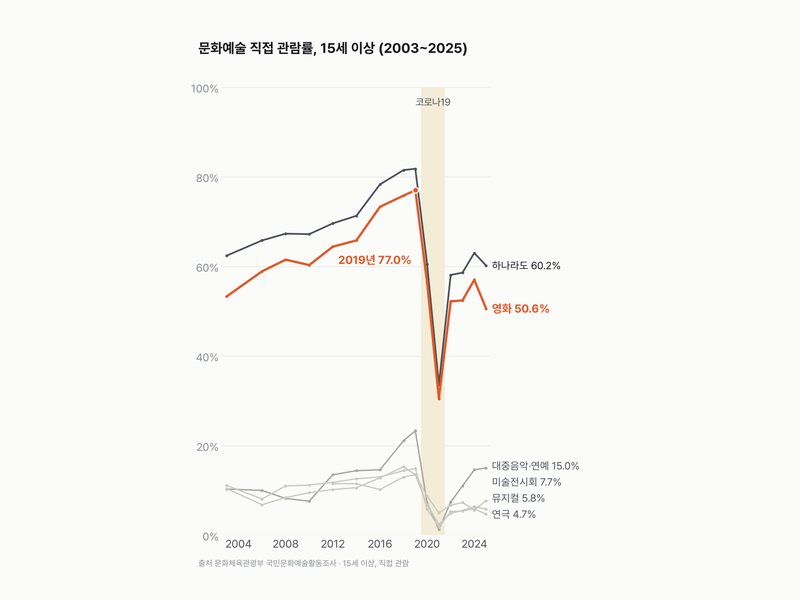
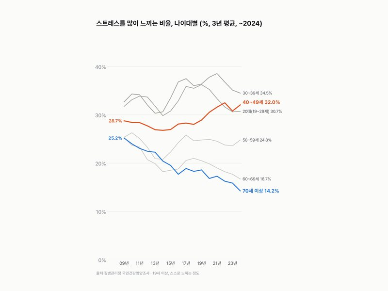
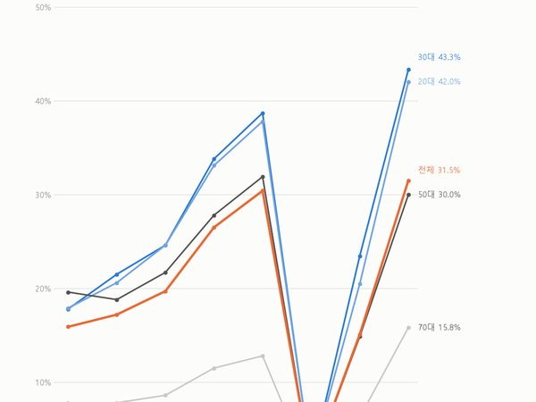
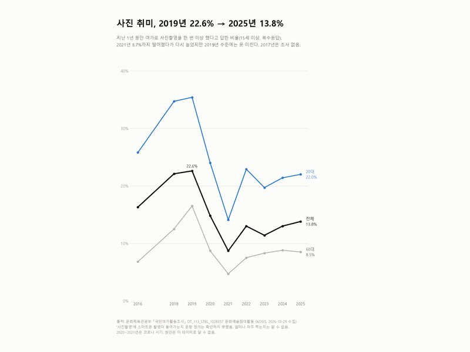

카테고리
생활·건강
12편 · 최신 글부터
 48.8%남자 비만 48.8%, 1998년 25.1%의 두 배 가까이국민건강영양조사 1998~2024
48.8%남자 비만 48.8%, 1998년 25.1%의 두 배 가까이국민건강영양조사 1998~2024 28.5%남자 담배(궐련) 흡연율 28.5%, 전자담배까지 합치면 36.0%국민건강영양조사 1998~2024
28.5%남자 담배(궐련) 흡연율 28.5%, 전자담배까지 합치면 36.0%국민건강영양조사 1998~2024 226.1만 원건강보험 1인당 진료비 226.1만 원, 2000년의 8배(명목)건강보험통계 2000~2024
226.1만 원건강보험 1인당 진료비 226.1만 원, 2000년의 8배(명목)건강보험통계 2000~2024 2,957.6만 vs 1,958.5만2025년 나간 한국인 2,957.6만, 들어온 외국인 1,958.5만출입국통계 2010~2025
2,957.6만 vs 1,958.5만2025년 나간 한국인 2,957.6만, 들어온 외국인 1,958.5만출입국통계 2010~2025
77.0% → 50.6%영화관 간 사람 77.0%(2019) → 50.6%국민문화예술활동조사 37.0% → 51.4%한 달에 한 번 이상 마시는 여자 37.0% → 51.4%국민건강영양조사 음주
37.0% → 51.4%한 달에 한 번 이상 마시는 여자 37.0% → 51.4%국민건강영양조사 음주 50.8% → 71.6%주말엔 쉰다, 2015년 50.8% → 2025년 71.6%사회조사 주말 여가활용
50.8% → 71.6%주말엔 쉰다, 2015년 50.8% → 2025년 71.6%사회조사 주말 여가활용
28.7% → 32.0%스트레스 많다: 40대는 늘고, 70대 이상은 절반 가까이로국민건강영양조사 2007~2024
31.5%해외여행 간 사람, 2021년 1.1% → 2025년 31.5%사회조사 2011~2025 62.9%주 1회 이상 운동 62.9%, 10대만 4년 연속 줄었다국민생활체육조사 2012~2025
62.9%주 1회 이상 운동 62.9%, 10대만 4년 연속 줄었다국민생활체육조사 2012~2025 55.7% → 38.5%1년에 책 한 권, 성인 55.7% → 38.5%국민 독서실태조사 2019~2025
55.7% → 38.5%1년에 책 한 권, 성인 55.7% → 38.5%국민 독서실태조사 2019~2025
22.6% → 13.8%사진 취미, 2019년 22.6% → 2025년 13.8%국민여가활동조사 2016~2025